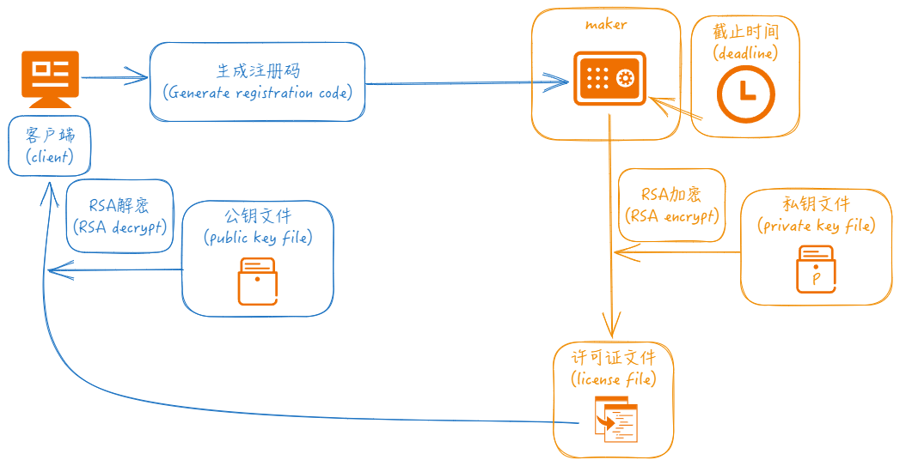

天佐.混沌钟
天佐.混沌钟


| 操作系统 | ||
| 编译器 | ||
| 编程语言 |          |
简介

天佐.混沌钟 保护你开发的软件不受未经授权的拷贝，及时限制使用，只在特定的机器上使用。
传说: 乃是上古十大神器之首，被誉为力量最强大的神器。 东皇钟之所被称之为东皇钟，其拥有者便是东皇太一，东皇太一是上古神话中，名列前五的大神，作为其法宝的东皇钟，实力也不赖。相传东皇钟是天界之门，可控日月，能变阴阳，东皇钟是一种防御性很强，攻击力较弱，但是爆发力惊人的法器，一旦爆发真正实力，基本上能够毁天灭地，吞噬诸天。
目标
保护你开发的软件不受未经授权的拷贝，及时限制使用，只在特定的机器上使用。

功能
- 🧩 集成简单
- 🪢 数据经过算法加密
- 🔒 可按时间限制, 可按设备ID限制, 也可同时限制
流程
客户端软件中调用get_machineid接口可以获取到机器码(注册码), 然后通过maker程序输入注册码/截止时间来创建许可证文件, maker生成许可证文件时需要读取私钥文件, 对应的公钥信息在客户端软件中进行输入. 当许可证发布到客户端本地后, 客户端启动调用check接口进行验证.
- 生成公钥私钥配对的信息文件.
// 创建私钥文件
(1) openssl genrsa -out privatekey.pem 2048
// 根据私钥文件创建对应的公钥文件
(2) openssl rsa -in privatekey.pem -pubout -out publickey.pem
- 通过maker命令行创建许可证文件:
// 仅生成时间限制的许可证文件
maker.exe --type=1 --date="2024-04-30" --keyfile="privatekey.pem"
// 仅生成机器码限制的许可证文件
maker.exe --type=2 --id="9ea03801651cd3d93add9d42a07d3c4b" --keyfile="privatekey.pem"
// 生成同时拥有时间限制和机器码限制的许可证文件
maker.exe --type=3 --date="2024-04-30" --id="9ea03801651cd3d93add9d42a07d3c4b" --keyfile="privatekey.pem"
例子
cpp
#include <iostream>
#include "../../include/tianzuo.HundunInterface.h" // 接口头文件 interface heaher file
#define Get_Machineid 0
int main() {
std::string public_key = "-----BEGIN PUBLIC KEY-----\n"
"MIIBIjANBgkqhkiG9w0BAQEFAAOCAQ8AMIIBCgKCAQEA3I4g6QtToZuQopoS7Myf\n"
"p1QPSBdC0PWNzG0Ii+oMeEp+aqiiVDU33aIrHgyXcBsDNFyPi3R3USNI9WbyO0cw\n"
"LrlYS8YRjP6ckz90lZph2VSXCFWXQm7nOqD4P9GC3QMvV3U9XLyLufRiZs0BcYVF\n"
"ENbm+jt3Z8/ikkFaLh0Mw8Y3ksjJN+Kd2DyEgpj5taLXHShHRyLjWAd102M2J4Id\n"
"z1hZg3CxyQNN7hQPmsFvZBsOejqAKeSO57/hRgo6IgZHh7iFbIpNyYjj1fxL0T5o\n"
"ouJ5yHODq8fWQ9ZHmk3po9QtbQJIYXO/ShfladQiZrz74vg6VFjleVyPp9m9gAUn\n"
"lQIDAQAB\n"
"-----END PUBLIC KEY-----\n";
tianzuo_HundunInt hundun;
#if Get_Machineid
const char* id = hundun.get_machineid();
if (id == nullptr) {
std::cerr << "hundun.get_machineid error" << std::endl;
return -1;
}
std::cout << "id: " << id << std::endl;
#else
int days = 0;
int error_code = tianzuo_Hundun_check(public_key.c_str(), "license.dat", &days);
if (error_code != Hundun_error_code_success) {
std::cout << "hundun.check error_code: " << error_code << " error_string: " << Hundun_error_code_strings_cn[error_code] << std::endl;
return -1;
}
std::cout << "hundun.check days: " << days << std::endl;
#endif
return 0;
}
python
from ctypes import *
from enum import Enum
import ctypes
tianzuo_HundunLib = cdll.LoadLibrary('./tianzuo.Hundun.dll')
class Hundun_error_code(Enum):
Hundun_error_code_success = 0 # 成功
Hundun_error_code_parameter = 1 # 参数错误
Hundun_error_code_parse = 2 # 解析错误
Hundun_error_code_licensefile = 3 # 许可证文件或路径错误
Hundun_error_code_outofdate = 4 # 日期已过
Hundun_error_code_unmatched = 5 # 机器码不匹配
def tianzuo_Hundun_check(public_key_string, license_file, days):
tianzuo_HundunLib.tianzuo_Hundun_check.argtypes = [c_char_p, c_char_p, ctypes.POINTER(ctypes.c_int)]
return tianzuo_HundunLib.tianzuo_Hundun_check(public_key_string, license_file, days)
def main():
public_key = (b"-----BEGIN PUBLIC KEY-----\n"
b"MIIBIjANBgkqhkiG9w0BAQEFAAOCAQ8AMIIBCgKCAQEA3I4g6QtToZuQopoS7Myf\n"
b"p1QPSBdC0PWNzG0Ii+oMeEp+aqiiVDU33aIrHgyXcBsDNFyPi3R3USNI9WbyO0cw\n"
b"LrlYS8YRjP6ckz90lZph2VSXCFWXQm7nOqD4P9GC3QMvV3U9XLyLufRiZs0BcYVF\n"
b"ENbm+jt3Z8/ikkFaLh0Mw8Y3ksjJN+Kd2DyEgpj5taLXHShHRyLjWAd102M2J4Id\n"
b"z1hZg3CxyQNN7hQPmsFvZBsOejqAKeSO57/hRgo6IgZHh7iFbIpNyYjj1fxL0T5o\n"
b"ouJ5yHODq8fWQ9ZHmk3po9QtbQJIYXO/ShfladQiZrz74vg6VFjleVyPp9m9gAUn\n"
b"lQIDAQAB\n"
b"-----END PUBLIC KEY-----\n")
Hundun_error_code_strings_cn = (
"成功",
"参数错误",
"解析错误",
"许可证文件或路径错误",
"日期已过",
"机器码不匹配")
Hundun_error_code_strings = (
"success",
"parameter error",
"parse error",
"license filename error",
"out of date",
"machine id unmatched")
days = ctypes.c_int()
license_file = b"license.dat"
error_code = tianzuo_Hundun_check(public_key, license_file, days)
if error_code != Hundun_error_code.Hundun_error_code_success.value:
print("hundun.check error_code: {} error_string: {}".format(error_code, Hundun_error_code_strings_cn[error_code]))
return
int_days = days.value
print("hundun.check days: {}".format(int_days))
if __name__ == '__main__':
main()
java
package cn.camelsoft;
import com.sun.jna.Library;
import com.sun.jna.Native;
enum Hundun_error_code {
Hundun_error_code_success (0), ///< 成功
Hundun_error_code_parameter (1), ///< 参数错误
Hundun_error_code_parse (2), ///< 解析错误
Hundun_error_code_licensefile (3), ///< 许可证文件或路径错误
Hundun_error_code_outofdate (4), ///< 日期已过
Hundun_error_code_unmatched (5); ///< 机器码不匹配
private int value;
Hundun_error_code(int value) {
this.value = value;
}
public int getValue() {
return value;
}
}
public class Main {
public interface tianzuo_HundunLib extends Library {
tianzuo_HundunLib instance = (tianzuo_HundunLib) Native.load("./tianzuo.Hundun.dll", tianzuo_HundunLib.class);
int tianzuo_Hundun_check(String public_key_string, String license_file, int[] days);
}
public static void main(String[] args) {
System.setProperty("jna.encoding","UTF-8");
String public_key = "-----BEGIN PUBLIC KEY-----\n" +
"MIIBIjANBgkqhkiG9w0BAQEFAAOCAQ8AMIIBCgKCAQEA3I4g6QtToZuQopoS7Myf\n" +
"p1QPSBdC0PWNzG0Ii+oMeEp+aqiiVDU33aIrHgyXcBsDNFyPi3R3USNI9WbyO0cw\n" +
"LrlYS8YRjP6ckz90lZph2VSXCFWXQm7nOqD4P9GC3QMvV3U9XLyLufRiZs0BcYVF\n" +
"ENbm+jt3Z8/ikkFaLh0Mw8Y3ksjJN+Kd2DyEgpj5taLXHShHRyLjWAd102M2J4Id\n" +
"z1hZg3CxyQNN7hQPmsFvZBsOejqAKeSO57/hRgo6IgZHh7iFbIpNyYjj1fxL0T5o\n" +
"ouJ5yHODq8fWQ9ZHmk3po9QtbQJIYXO/ShfladQiZrz74vg6VFjleVyPp9m9gAUn\n" +
"lQIDAQAB\n" +
"-----END PUBLIC KEY-----\n";
String[] Hundun_error_code_strings_cn = {"成功",
"参数错误",
"解析错误",
"许可证文件或路径错误",
"日期已过",
"机器码不匹配"};
String[] Hundun_error_code_strings = {
"success",
"parameter error",
"parse error",
"license filename error",
"out of date",
"machine id unmatched"
};
int[] days = {0};
int error_code = tianzuo_HundunLib.instance.tianzuo_Hundun_check(public_key, "license.dat", days);
if (error_code != Hundun_error_code.Hundun_error_code_success.getValue()) {
System.out.printf("hundun.check error_code: %d error_string: %s\n", error_code, Hundun_error_code_strings_cn[error_code]);
return;
}
System.out.printf("hundun.check days: : %d\n", days[0]);
}
}
csharp
using System.Runtime.InteropServices;
class Program {
[DllImport("tianzuo.Hundun.dll")]
public static extern int tianzuo_Hundun_check(string public_key_string, string license_file, ref int days);
public enum Hundun_error_code
{
Hundun_error_code_success, ///< 成功
Hundun_error_code_parameter, ///< 参数错误
Hundun_error_code_parse, ///< 解析错误
Hundun_error_code_licensefile, ///< 许可证文件或路径错误
Hundun_error_code_outofdate, ///< 日期已过
Hundun_error_code_unmatched ///< 机器码不匹配
}
public string[] Hundun_error_code_strings_cn = {
"成功",
"参数错误",
"解析错误",
"许可证文件或路径错误",
"日期已过",
"机器码不匹配"
};
public string[] Hundun_error_code_strings = {
"success",
"parameter error",
"parse error",
"license filename error",
"out of date",
"machine id unmatched"
};
static void Main(string[] args) {
string public_key = "-----BEGIN PUBLIC KEY-----\n" +
"MIIBIjANBgkqhkiG9w0BAQEFAAOCAQ8AMIIBCgKCAQEA3I4g6QtToZuQopoS7Myf\n" +
"p1QPSBdC0PWNzG0Ii+oMeEp+aqiiVDU33aIrHgyXcBsDNFyPi3R3USNI9WbyO0cw\n" +
"LrlYS8YRjP6ckz90lZph2VSXCFWXQm7nOqD4P9GC3QMvV3U9XLyLufRiZs0BcYVF\n" +
"ENbm+jt3Z8/ikkFaLh0Mw8Y3ksjJN+Kd2DyEgpj5taLXHShHRyLjWAd102M2J4Id\n" +
"z1hZg3CxyQNN7hQPmsFvZBsOejqAKeSO57/hRgo6IgZHh7iFbIpNyYjj1fxL0T5o\n" +
"ouJ5yHODq8fWQ9ZHmk3po9QtbQJIYXO/ShfladQiZrz74vg6VFjleVyPp9m9gAUn\n" +
"lQIDAQAB\n" +
"-----END PUBLIC KEY-----\n";
int days = 0;
int error_code = tianzuo_Hundun_check(public_key, "license.dat", ref days);
if (error_code != (int)Hundun_error_code.Hundun_error_code_success)
{
Program myProgram = new Program();
Console.WriteLine("hundun.check error_code: " + error_code + " error_string: " + myProgram.Hundun_error_code_strings_cn[error_code]);
return;
}
Console.WriteLine("hundun.check days: " + days);
}
}
javascript
Hundun_error_code_success = 0 // 成功
Hundun_error_code_parameter = 1 // 参数错误
Hundun_error_code_parse = 2 // 解析错误
Hundun_error_code_licensefile = 3 // 许可证文件或路径错误
Hundun_error_code_outofdate = 4 // 日期已过
Hundun_error_code_unmatched = 5 // 机器码不匹配
let ffi = require('ffi-napi')
const ref = require('ref-napi');
let tianzuo_HundunLib = ffi.Library("tianzuo.Hundun.dll", {
'tianzuo_Hundun_check':['int',['string','string','pointer']],
})
let public_key = "-----BEGIN PUBLIC KEY-----\n" +
"MIIBIjANBgkqhkiG9w0BAQEFAAOCAQ8AMIIBCgKCAQEA3I4g6QtToZuQopoS7Myf\n" +
"p1QPSBdC0PWNzG0Ii+oMeEp+aqiiVDU33aIrHgyXcBsDNFyPi3R3USNI9WbyO0cw\n" +
"LrlYS8YRjP6ckz90lZph2VSXCFWXQm7nOqD4P9GC3QMvV3U9XLyLufRiZs0BcYVF\n" +
"ENbm+jt3Z8/ikkFaLh0Mw8Y3ksjJN+Kd2DyEgpj5taLXHShHRyLjWAd102M2J4Id\n" +
"z1hZg3CxyQNN7hQPmsFvZBsOejqAKeSO57/hRgo6IgZHh7iFbIpNyYjj1fxL0T5o\n" +
"ouJ5yHODq8fWQ9ZHmk3po9QtbQJIYXO/ShfladQiZrz74vg6VFjleVyPp9m9gAUn\n" +
"lQIDAQAB\n" +
"-----END PUBLIC KEY-----\n";
const Hundun_error_code_strings_cn = [
"成功",
"参数错误",
"解析错误",
"许可证文件或路径错误",
"日期已过",
"机器码不匹配"];
const Hundun_error_code_strings = [
"success",
"parameter error",
"parse error",
"license filename error",
"out of date",
"machine id unmatched"];
days = Buffer.alloc(1 * ref.sizeof.int);
let error_code = tianzuo_HundunLib.tianzuo_Hundun_check(public_key, "license.dat", days);
if (error_code !== Hundun_error_code_success) {
console.log("hundun.check error_code: %d error_string: %s\n", error_code, Hundun_error_code_strings_cn[error_code]);
return -1;
}
days_data = ref.get(days, 0, ref.types.int);
console.log("hundun.check days: %d\n", days_data);
php
<?php
// 检查是否加载了 FFI 扩展
if (extension_loaded('ffi')) {
echo("已启用 FFI 扩展\n");
} else {
die("未启动 FFI 扩展\n");
}
enum Hundun_error_code
{
const Hundun_error_code_success = 0; // 成功
const Hundun_error_code_parameter = 1; // 参数错误
const Hundun_error_code_parse = 2; // 解析错误
const Hundun_error_code_licensefile = 3; // 许可证文件或路径错误
const Hundun_error_code_outofdate = 4; // 日期已过
const Hundun_error_code_unmatched = 5; // 机器码不匹配
}
$ffi = FFI::cdef("
int tianzuo_Hundun_check(const char* public_key_string, const char* license_file, int* days);
", "tianzuo.Hundun.dll");
$public_key = "-----BEGIN PUBLIC KEY-----
MIIBIjANBgkqhkiG9w0BAQEFAAOCAQ8AMIIBCgKCAQEA3I4g6QtToZuQopoS7Myf
p1QPSBdC0PWNzG0Ii+oMeEp+aqiiVDU33aIrHgyXcBsDNFyPi3R3USNI9WbyO0cw
LrlYS8YRjP6ckz90lZph2VSXCFWXQm7nOqD4P9GC3QMvV3U9XLyLufRiZs0BcYVF
ENbm+jt3Z8/ikkFaLh0Mw8Y3ksjJN+Kd2DyEgpj5taLXHShHRyLjWAd102M2J4Id
z1hZg3CxyQNN7hQPmsFvZBsOejqAKeSO57/hRgo6IgZHh7iFbIpNyYjj1fxL0T5o
ouJ5yHODq8fWQ9ZHmk3po9QtbQJIYXO/ShfladQiZrz74vg6VFjleVyPp9m9gAUn
lQIDAQAB
-----END PUBLIC KEY-----\n";
define('Hundun_error_code_strings_cn', [
"成功",
"参数错误",
"解析错误",
"许可证文件或路径错误",
"日期已过",
"机器码不匹配"]);
define('Hundun_error_code_strings', [
"success",
"parameter error",
"parse error",
"license filename error",
"out of date",
"machine id unmatched"
]);
$days = FFI::new("int");
$error_code = $ffi->tianzuo_Hundun_check($public_key, "license.dat", FFI::addr($days));
if ($error_code != Hundun_error_code::Hundun_error_code_success) {
echo "hundun.check error_code: " . $error_code . " error_string: " . Hundun_error_code_strings_cn[$error_code] . "\n";
return;
}
echo "hundun.check days: " . $days->cdata . "\n";
?>
vb
Imports System.Runtime.InteropServices
Enum Hundun_error_code
Hundun_error_code_success = 0 ' 成功
Hundun_error_code_parameter = 1 ' 参数错误
Hundun_error_code_parse = 2 ' 解析错误
Hundun_error_code_licensefile = 3 ' 许可证文件或路径错误
Hundun_error_code_outofdate = 4 ' 日期已过
Hundun_error_code_unmatched = 5 ' 机器码不匹配
End Enum
Module Program
<DllImport("tianzuo.Hundun.dll")>
Public Function tianzuo_Hundun_check(public_key_string As String, license_file As String, ByRef days As Integer) As Integer
End Function
ReadOnly Hundun_error_code_strings_cn() As String = {
"成功",
"参数错误",
"解析错误",
"许可证文件或路径错误",
"日期已过",
"机器码不匹配"}
ReadOnly Hundun_error_code_strings() As String = {
"success",
"parameter error",
"parse error",
"license filename error",
"out of date",
"machine id unmatched"}
Sub Main(args As String())
Dim public_key As String = "-----BEGIN PUBLIC KEY-----
MIIBIjANBgkqhkiG9w0BAQEFAAOCAQ8AMIIBCgKCAQEA3I4g6QtToZuQopoS7Myf
p1QPSBdC0PWNzG0Ii+oMeEp+aqiiVDU33aIrHgyXcBsDNFyPi3R3USNI9WbyO0cw
LrlYS8YRjP6ckz90lZph2VSXCFWXQm7nOqD4P9GC3QMvV3U9XLyLufRiZs0BcYVF
ENbm+jt3Z8/ikkFaLh0Mw8Y3ksjJN+Kd2DyEgpj5taLXHShHRyLjWAd102M2J4Id
z1hZg3CxyQNN7hQPmsFvZBsOejqAKeSO57/hRgo6IgZHh7iFbIpNyYjj1fxL0T5o
ouJ5yHODq8fWQ9ZHmk3po9QtbQJIYXO/ShfladQiZrz74vg6VFjleVyPp9m9gAUn
lQIDAQAB
-----END PUBLIC KEY-----"
Dim license_file As String = "license.dat"
Dim days As Integer = 0
Dim error_code As Integer = tianzuo_Hundun_check(public_key, license_file, days)
If (error_code <> Hundun_error_code.Hundun_error_code_success) Then
Console.WriteLine("hundun.check error_code: " + error_code.ToString + " error_string: " + Hundun_error_code_strings_cn(error_code))
Return
End If
Console.WriteLine("hundun.check days:" + days.ToString)
End Sub
End Module
go
package main
/*
#include "tianzuo.HundunInterface.h"
*/
import "C"
import (
"fmt"
"syscall"
"unsafe"
)
const (
Hundun_error_code_success = 0 // 成功
Hundun_error_code_parameter = 1 // 参数错误
Hundun_error_code_parse = 2 // 解析错误
Hundun_error_code_licensefile = 3 // 许可证文件或路径错误
Hundun_error_code_outofdate = 4 // 日期已过
Hundun_error_code_unmatched = 5 // 机器码不匹配
)
func main() {
const public_key string = "-----BEGIN PUBLIC KEY-----\n" +
"MIIBIjANBgkqhkiG9w0BAQEFAAOCAQ8AMIIBCgKCAQEA3I4g6QtToZuQopoS7Myf\n" +
"p1QPSBdC0PWNzG0Ii+oMeEp+aqiiVDU33aIrHgyXcBsDNFyPi3R3USNI9WbyO0cw\n" +
"LrlYS8YRjP6ckz90lZph2VSXCFWXQm7nOqD4P9GC3QMvV3U9XLyLufRiZs0BcYVF\n" +
"ENbm+jt3Z8/ikkFaLh0Mw8Y3ksjJN+Kd2DyEgpj5taLXHShHRyLjWAd102M2J4Id\n" +
"z1hZg3CxyQNN7hQPmsFvZBsOejqAKeSO57/hRgo6IgZHh7iFbIpNyYjj1fxL0T5o\n" +
"ouJ5yHODq8fWQ9ZHmk3po9QtbQJIYXO/ShfladQiZrz74vg6VFjleVyPp9m9gAUn\n" +
"lQIDAQAB\n" +
"-----END PUBLIC KEY-----\n"
Hundun_error_code_strings_cn := [6]string{
"成功",
"参数错误",
"解析错误",
"许可证文件或路径错误",
"日期已过",
"机器码不匹配"}
//Hundun_error_code_strings := [6]string{
// "success",
// "parameter error",
// "parse error",
// "license filename error",
// "out of date",
// "machine id unmatched"}
dll := syscall.MustLoadDLL("tianzuo.Hundun.dll")
tianzuo_Hundun_check := dll.MustFindProc("tianzuo_Hundun_check")
days := C.int(0)
pub_key := C.CString(public_key)
license_file := C.CString("license.dat")
error_code, _, _ := tianzuo_Hundun_check.Call(uintptr(unsafe.Pointer(pub_key)), uintptr(unsafe.Pointer(license_file)), uintptr(unsafe.Pointer(&days)))
if error_code != Hundun_error_code_success {
fmt.Println("hundun.check error_code: ", error_code, " error_string: ", Hundun_error_code_strings_cn[error_code])
return
}
fmt.Println("hundun.check days: ", days)
}
rust
use std::os::raw::c_char;
use std::ffi::{c_int};
use std::ffi::CString;
#[link(name = "tianzuo.Hundun")]
extern {
fn tianzuo_Hundun_check(public_key_string: *const c_char, license_file: *const c_char, days: *const c_int) -> c_int;
}
const Hundun_error_code_strings_cn: [&str; 6] = [
"成功",
"参数错误",
"解析错误",
"许可证文件或路径错误",
"日期已过",
"机器码不匹配"];
const Hundun_error_code_strings: [&str; 6] = [
"success",
"parameter error",
"parse error",
"license filename error",
"out of date",
"machine id unmatched"];
fn main() {
unsafe {
let public_key = CString::new(String::from("-----BEGIN PUBLIC KEY-----\n\
MIIBIjANBgkqhkiG9w0BAQEFAAOCAQ8AMIIBCgKCAQEA3I4g6QtToZuQopoS7Myf\n\
p1QPSBdC0PWNzG0Ii+oMeEp+aqiiVDU33aIrHgyXcBsDNFyPi3R3USNI9WbyO0cw\n\
LrlYS8YRjP6ckz90lZph2VSXCFWXQm7nOqD4P9GC3QMvV3U9XLyLufRiZs0BcYVF\n\
ENbm+jt3Z8/ikkFaLh0Mw8Y3ksjJN+Kd2DyEgpj5taLXHShHRyLjWAd102M2J4Id\n\
z1hZg3CxyQNN7hQPmsFvZBsOejqAKeSO57/hRgo6IgZHh7iFbIpNyYjj1fxL0T5o\n\
ouJ5yHODq8fWQ9ZHmk3po9QtbQJIYXO/ShfladQiZrz74vg6VFjleVyPp9m9gAUn\n\
lQIDAQAB\n\
-----END PUBLIC KEY-----\n")).expect("Failed to create CString");
let license_file = CString::new(String::from("license.dat")).expect("Failed to create CString");
let mut days: c_int = 0;
let error_code = tianzuo_Hundun_check(public_key.as_ptr(), license_file.as_ptr(), &mut days);
if 0 != error_code {
let errorc: usize = error_code as usize;
println!("hundun.check error_code: {:?} error_string: {:?}", error_code, Hundun_error_code_strings_cn[errorc]);
}
println!("hundun.check days: {:?}", days);
}
}
ruby
require 'fiddle'
lib = Fiddle::dlopen('C:/Users/zhengtianzuo/RubymineProjects/tianzuo.HundunTest/tianzuo.Hundun.dll')
tianzuo_Hundun_check = Fiddle::Function.new(lib['tianzuo_Hundun_check'], [Fiddle::TYPE_VOIDP, Fiddle::TYPE_VOIDP, Fiddle::TYPE_VOIDP], Fiddle::TYPE_INT)
public_key = "-----BEGIN PUBLIC KEY-----
MIIBIjANBgkqhkiG9w0BAQEFAAOCAQ8AMIIBCgKCAQEA3I4g6QtToZuQopoS7Myf
p1QPSBdC0PWNzG0Ii+oMeEp+aqiiVDU33aIrHgyXcBsDNFyPi3R3USNI9WbyO0cw
LrlYS8YRjP6ckz90lZph2VSXCFWXQm7nOqD4P9GC3QMvV3U9XLyLufRiZs0BcYVF
ENbm+jt3Z8/ikkFaLh0Mw8Y3ksjJN+Kd2DyEgpj5taLXHShHRyLjWAd102M2J4Id
z1hZg3CxyQNN7hQPmsFvZBsOejqAKeSO57/hRgo6IgZHh7iFbIpNyYjj1fxL0T5o
ouJ5yHODq8fWQ9ZHmk3po9QtbQJIYXO/ShfladQiZrz74vg6VFjleVyPp9m9gAUn
lQIDAQAB
-----END PUBLIC KEY-----"
Hundun_error_code_strings_cn = [
"成功",
"参数错误",
"解析错误",
"许可证文件或路径错误",
"日期已过",
"机器码不匹配"]
Hundun_error_code_strings = [
"success",
"parameter error",
"parse error",
"license filename error",
"out of date",
"machine id unmatched"]
license_file = "license.dat"
days = Fiddle::Pointer.malloc(Fiddle::SIZEOF_INT)
error_code = tianzuo_Hundun_check.call(public_key, license_file, days)
if error_code != 0
print("hundun.check error_code: ", error_code, " error_string:", Hundun_error_code_strings_cn[error_code] ," \n")
return
end
int_days = days[0, Fiddle::SIZEOF_INT].unpack('I')[0]
print("hundun.check days: ", int_days, "\n")
下载
 |
 |
 |
 |